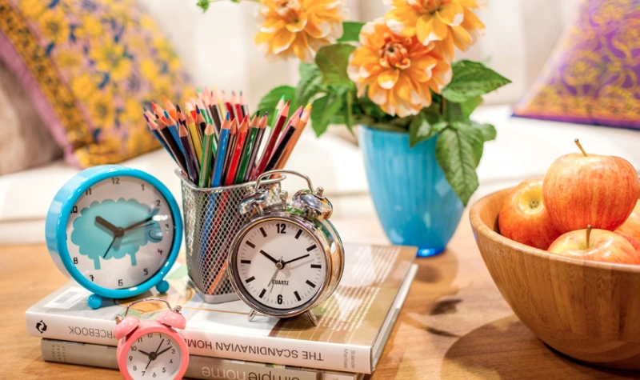

Laiks bieži vien paiet nemanot. Kur tas paliek? Studijas nozīmē sadalīt laiku, lai apmeklētu nodarbības, izpildītu mācību uzdevumus, mācītos patstāvīgi vai kopīgi ar kādu, gatavotos kontroldarbiem/eksāmeniem. Laika plānošanas problēmas ir visai izplatītas jauniešu vidū. 2006. gada oktobra nogalē LU veiktais pētījums par pirmā kursa studentiem liecina, ka 46% jauno studentu neprot plānot laiku. Daudzi studenti paralēli studijām strādā. Tādēļ jo īpaši būtiska ir laika plānošana, jo laiks jāiedala gan atpūtai, gan draugiem, gan ģimenei, gan brīvā laika aktivitātēm, sportam un saviem vaļaspriekiem. Laiks iedalās trīs galvenās jomās: augstskola, darbs un brīvais laiks. Kā tu izmanto savu laiku, tas atkarīgs no taviem mērķiem, vajadzībām un interesēm. Tu vari justies pašpaļāvīgāks, apmierinātāks un laimīgāks, ja pārraudzīsi savu laiku, tā iegūstot līdzsvarotāku dzīvi. Ja izjūti neapmierinātību, šaubas, aizvainojumu, kontroles izjūtas trūkumu pār notiekošo, tad vajadzētu pārbaudīt to, kā tu izmanto savu laiku. Ir svarīgi līdzsvarot laiku tā, lai gūtui gandarījumu no savas darbošanās.
Cik daudz laika pavadīji skolā? (lekcijas, lasīšana, citas nodarbības..)
Cik stundas esi strādājis? (algotajā darbā, uzkopjot māju, taisot ēst..)
Cik daudz laika esi veltījis atslodzei? (laiks ar draugiem, ģimeni, runājot pa telefonu, skatoties TV, klausoties mūziku, izmantojot internetu, sportošanai, vaļaspriekiem u. c. brīvā laika aktivitātēm.
Cik daudz laika esi gulējis vai snauduļojis?
Cik daudz laika vēl pavadīji kādā citā veidā?
Tagad uz atsevišķas lapas atbildi sev uz šādiem jautājumiem:
Laika menedžmenta eksperts Džeimss Manktelovs no mindtools.com ir pārliecināts – viss būs kārtībā, ja katrai dienai būs skaidrs laika plāns.
Viņš iesaka:
1. Sāciet ar nākamās dienas veicamo darbu sarakstu. Vispirms pierakstiet uz lapas visus aktuālos darbus, tad sadaliet lapu trīs slejās (A, B, C) un sagrupējiet darbus pēc prioritātes:
2. Apsveriet, cik laika katrs darbs varētu prasīt. Sasummējiet to un novērtējiet, vai viss iecerētais maz ir ietilpināms vienā dienā. Pētījumi liecina, ka mēs varam saplānot tikai 60% laika– pārējais tiek patērēts iepriekš neparedzamām lietām. Tāpēc, ja plānotais pārsniedz 60% pieejamā laika, mazāk svarīgo uzreiz izsvītrojiet.
3. Ik vakaru pārbaudiet, vai visu izdevies paveikt. Ja ne – izanalizējiet, kas un kāpēc jūsu ikdienā patērē pārlieku daudz laika, bet kam tā allaž nepietiek. Ievērojiet šo principu vismaz četras nedēļas, un drīz pamanīsiet, ka jūsu dzīvē ir mazāk stresa, toties parādījies vairāk laika.
Dažu digitālo laika plānošānas rīku salīdzinājums
Informācijas daudzuma mērvienības